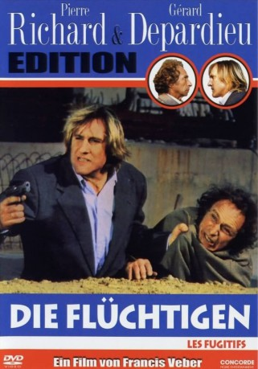
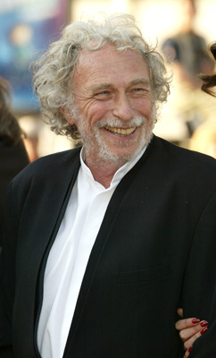
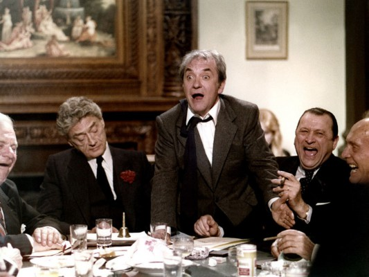
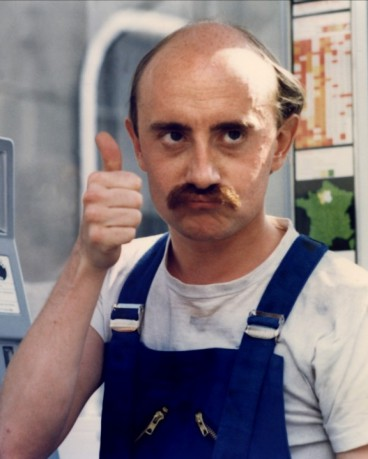

#5932 Die Flüchtigen
Alternativ: The Fugitives (Englischer Titel)
 
 IMDB-Wertung: 7.1 / 10
IMDB-Wertung: 7.1 / 10  Metascore: 0
Metascore: 0 
Pignon will mit einem Überfall ans große Geld kommen. Bei der Geiselnahme unterläuft ihm allerdings ein kleiner Fehler: Er hat sich ausgerechnet den gerade aus der Haft entlassenen Lucas ausgesucht. Natürlich hält die Polizei den Ex-Bankräuber für den Drahtzieher. Gemeinsam mit dem Tolpatsch Pignon ergreift Lucas die Flucht...
Jahr: 1986
Dauer: 89 Minuten
FSK: 12
Land: Frankreich Studio: VPS Film-Entertainment GmbHTonspuren:
Untertitel:
Auflösung: 1080p (1920x1080) Größe: 6840 MB
Genre: Komödie, Krimi
Regisseur: Francis Veber
Drehbuch: Roland Emmerich
Soundtrack:
Darsteller:
-  Pierre Richard als François Pignon
 Gérard Depardieu als Jean Lucas
Gérard Depardieu als Jean Lucas-  Jean Carmet als Martin
-  Michel Blanc als Docteur Bourdarias , uncredited
- Maurice Barrier als Superintendant Duroc
- Jean Benguigui als Labib
- Roland Blanche als Idriss
- Anaïs Bret als Jeanne
- Philippe Lelièvre als Adjoint de Duroc
- Yveline Ailhaud als Femme-flic
- Didier Pain als Maître-chien
- Marc Adjadj als
- Alain Algara als
- Eric Averlant als
- Jean-Pierre Becker als
- Pierre Belot als
- Pierre Berriau als
- Michel Berto als
- Michel Bompoil als
- Patrick Bonnel als
- Stéphane Boucher als
- Slimane Bouderhem als
- Marc-André Brunet als
- Pulcher Castan als
- Daniel Dhubert als
- Yves Elliot als
- Maurice Gelaude als
- Philippe Jourde als
- André Julien als
- Arno Klarsfeld als Le journaliste qui interviewe Lucas
- Guy Labadens als
- Gérard Laurent als
- Bernard Lepinaux als
- Marie-José Llano als
- Guy Louret als
- Patrick Massieu als
- Jacqueline Noëlle als
- Marc Ossona als
- Raymond Paquet als
- Patrick Pattern als
- Jacky Pratoussy als
- Isabelle Renauld als
- Jérôme Sarrazin als
- Hélène Schulz als
- Christian Sinniger als
- Jean Veber als
- Gérard Zalcberg als
- Pamela Stanford als Une femme à la réception de la clinique , uncredited
Datei: X:\1986\Flüchtigen, Die (1986, FSK12, 1920x1080).mkv seit 06.04.2017
Festplatte: HD 1980-1986
 Es gibt insgesamt 50 Filme in der Gruppe '1986'
Es gibt insgesamt 50 Filme in der Gruppe '1986'